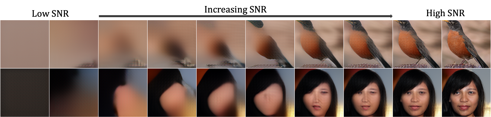
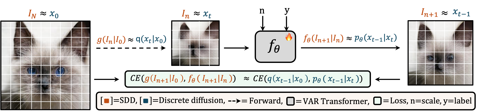
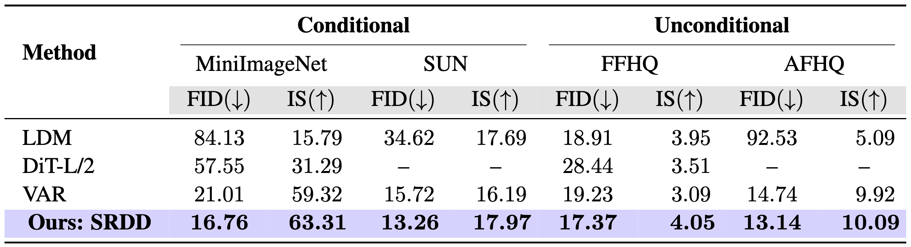
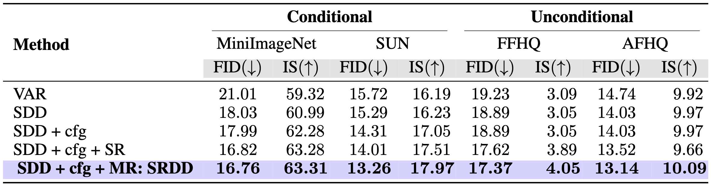
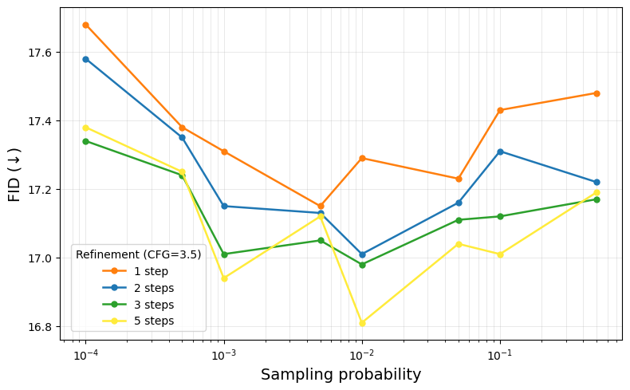
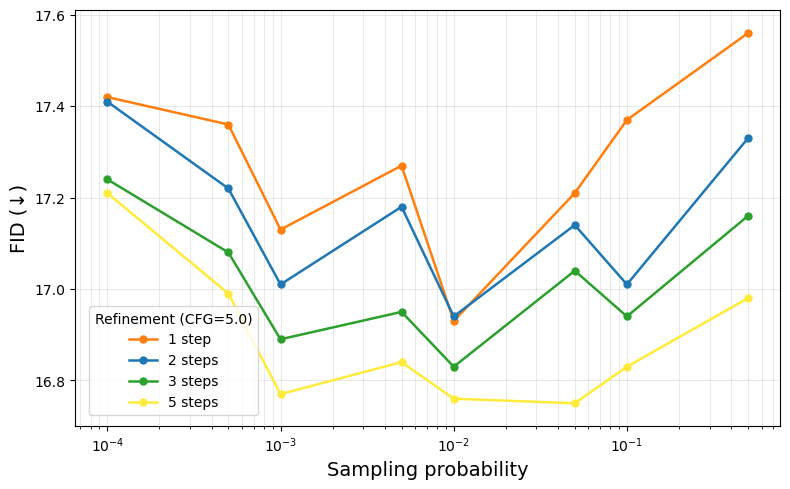
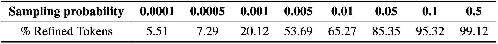

Autoregressive (AR) transformers have emerged as a powerful paradigm for visual generation, largely due to their scalability, computational efficiency and unified architecture with language and vision. Among them, next scale prediction Visual Autoregressive Generation (VAR) has recently demonstrated remarkable performance, even surpassing diffusion-based models. In this work, we revisit VAR and uncover a theoretical insight: when equipped with a Markovian attention mask, VAR is mathematically equivalent to a discrete diffusion. We term this reinterpretation as Scalable Visual Refinement with Discrete Diffusion (SRDD), establishing a principled bridge between AR transformers and diffusion models. Leveraging this new perspective, we show how one can directly import the advantages of diffusion—such as iterative refinement and reduce architectural inefficiencies into VAR, yielding faster convergence, lower inference cost, and improved zero-shot reconstruction. Across multiple datasets, we show that the diffusion-based perspective of VAR leads to consistent gains in efficiency and generation.
We visualize how SNR improves through successive stages of the generation, which is very similar to that in diffusion process.


An illustration of SDD. The SDD forward process $g(I_n \mid I_0) = M(n) I_0$ mirrors the diffusion transition $q(x_t \mid x_0)$, where the ground truth $I_0$ is deterministically degraded by the transition matrix $M(n)$. Further, the learnable transformer $f_\theta(I_n, n, y)$ predicts the coarser-to-finer transition $I_{n+1}$, analogous to the reverse diffusion step $p_\theta(x_{t-1} \mid x_t)$. Importantly, the training objective in both cases reduces to a cross-entropy loss between the forward posterior and model prediction, making the loss formulation of SDD equivalent to the diffusion ELBO in the limiting case of a deterministic transition.
Quantitative results compared to different generative models on the same training setting: We compare using FID and IS on conditional and unconditional generation tasks. Here, "-" denotes that the model has not converged during the training process.

Ablation study across datasets: SR: Simple Resampling. MR: Mask Resampling. cfg: Optimized Classifier-Free Guidance.

Ablation study illustrating the effect of MR: We experiment with different threshold $p_{\mathrm{resample}}$ and the number of refinement steps (Zoom in for better view)


